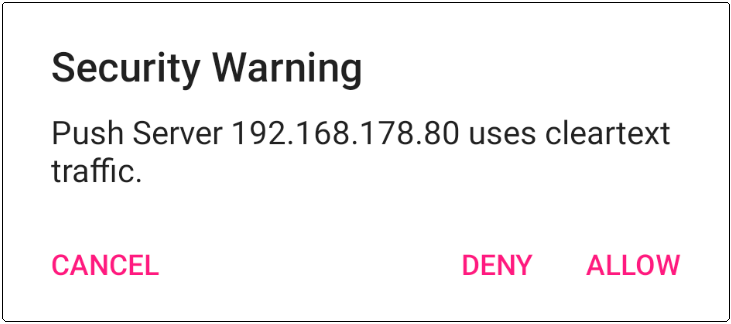

In der Regel ist die Verbindung zu einem Push-Server verschlüsselt. Sollte die Verbindung zum Push-Server unverschlüsselt sein, erhalten Sie eine Warnmeldung. Wenn Sie die Verbindung zulassen, sollte Ihnen bewusst sein, dass die Daten Ihres MQTT-Accounts im Klartext übertragen werden:

Die Verbindung zum Push-Server erfolgt verschlüsselt, wenn der Betreiber
des Push-Servers SSL aktiviert hat. Die Authentizität des Push-Servers
wird anhand von Zertifikaten überprüft. Kann die Authentizität des
Push-Servers nicht bestätigt werden, erscheint ein Sicherheitshinweis:
„Push Server
Sie können Verbindungen zu diesem Server aufnehmen, indem sie auf klicken, sollten sich jedoch darüber im Klaren sein, dass damit auch die Möglichkeit besteht, dass ein Dritter an Ihre MQTT-Account-Daten gelangt.